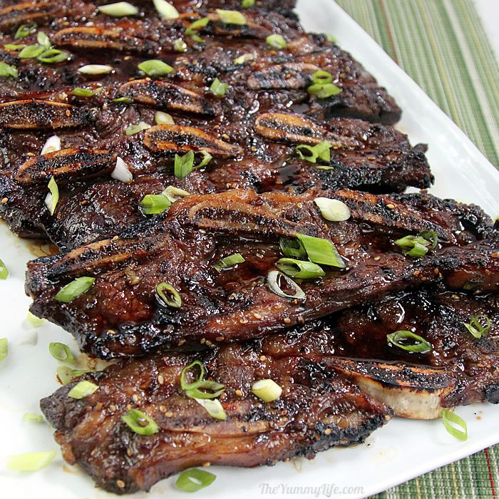

Korean BBQ Galbi


Description
Best Korean BBQ. Traditionally galbi is cooked over wood charcoal but can be cooked by grill, oven, or using a non-stick frying pan. Instead of Asian pears, you can use rice wine or kiwis. You can also add green onions, sesame seeds or fresh ginger.
Ingredients
- 5 pounds beef short ribs, cut flanken style
- 5 cloves garlic
- 1 onion, coarsely chopped
- 1 Asian pear, cored and cubed
- 1 cup soy sauce (such as Kikkoman®)
- 1 cup brown sugar
- ¼ cup honey
- ¼ cup sesame oil
- black pepper to taste
Steps
- Place the ribs in a large stockpot and cover with cold water. Soak ribs, refrigerated, for 1 hour to pull out any blood. Drain.
- Combine garlic, onion, and Asian pear in a blender and puree. Pour into a large bowl and stir in the soy sauce, brown sugar, honey, sesame oil, and black pepper. Marinate ribs in the soy mixture, covered, overnight.
- Preheat an outdoor grill for high heat, and lightly oil the grate.
- Grill ribs until the meat is tender and the outside is crusty, 5 to 10 minutes per side.